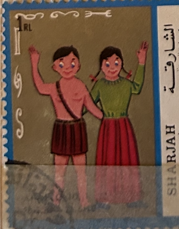
| SOURCE | TITLE| IMAGE MATCH | click to source page |
| eBay | cotton spool fabric label 1920's black Africans | eBay | 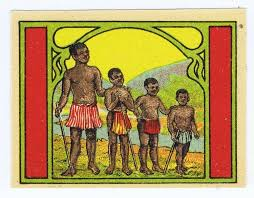 |
| The Metropolitan Museum of Art | Issued by Kinney Brothers Tobacco Company - Malay Warrior, from the Military Series (N224) issued by Kinney Tobacco Company to promote Sweet Caporal Cigarettes - The Metropolitan Museum of Art | 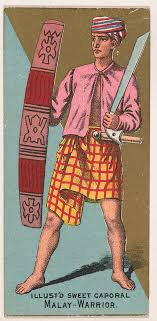 |
| The marching in of the Marang contingent during the HIMPIT 2023 event : r/malaysia | 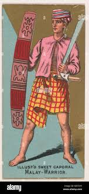 | |
| Wikimedia.org | File:Zulu Chief, Natal, South Africa, from the Military Series (N224) issued by Kinney Tobacco Company to promote Sweet Caporal Cigarettes MET DPB874379.jpg - Wikimedia Commons | 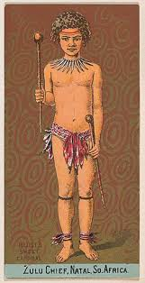 |
| 38 - El Apache | Loteria CAAR | Loteria Collection | 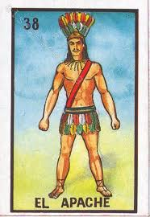 | |
| Phila Art | 1997 Ethnic Groups Stamp - Phila Art | 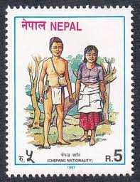 |
| Album Online | DIYU - Fotografías, ilustraciones e imágenes de stock - Album | 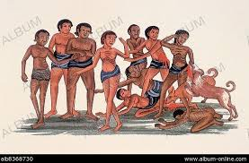 |
| Educaplay | Matching Pairs: Lenguas Originarias de Ecuador | 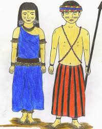 |
| move.com.au | JOSEPH and the AMAZING TECHNICOLOR DREAMCOAT | 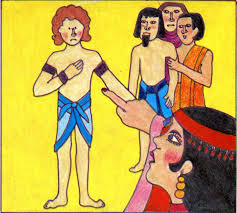 |
| Imgur | Things my mom censored in my childhood (part 1) - History post - Imgur | 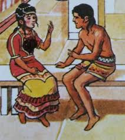 |
| Proamazonia | Peken Pujustin Iwiarnamu Asociación de Centros Shuar Sevilla Don Bosco | 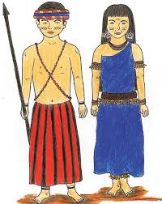 |
| Collecting Pepys | Happy Families of the World (2nd Edition) | 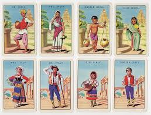 |
| eBay | 1959 Fleer Indian * 4 Cards * #3, 9, 35, 37 *Seminole Indian Boy & Men Alligator | eBay | 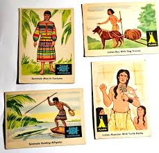 |
| Invaluable.com | Exuma Paintings & Artwork for Sale | Exuma Art Value Price Guide | 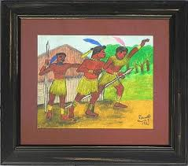 |
| Chisholm-Poster | Costumes of the World: French Indo-China -Asiatic Plate No. 29. - Moi Tribesman (WPA) | Original Vintage Poster | Chisholm Larsson Gallery | 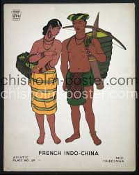 |
| Etsy | D.O Fagunwa Yoruba Novels - Etsy New Zealand | 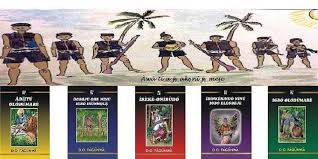 |
| Invaluable.com | Sold at Auction: Large vintage wall map “The Primary School Map of The World”. Map 200cm wide. | 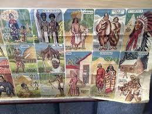 |
| WorthPoint | 50 MIXED EAGLE BIRD CIGARETTE CARDS CHINESE BEAUTIES + CHINA'S FAMOUS WARRIORS | #492227054 | 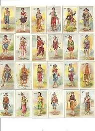 |
| StudiesToday | Downloaded from https:// www.studiestoday.com Downloaded from https:// www.studiestoday.com | 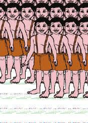 |
| Wikimedia.org | Category:Knobkerries - Wikimedia Commons | 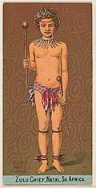 |
| Shutterstock | Ancient Couple Ancient Couple Exotic Clothes Stock Illustration 90423823 | Shutterstock | 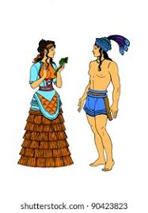 |
| Flickr | Image from page 874 of "Boston register and business direc… | Flickr | 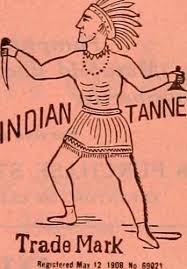 |
| Flickr | CRW_1570_RT8 | Les MINYONGS vivent dans la Siang Vallée | Annie Leroy | Flickr | 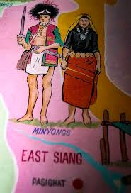 |
| Etsy | Vintage 1930s WPA Screenprint: French Indo-china Moi Tribesman - Etsy | 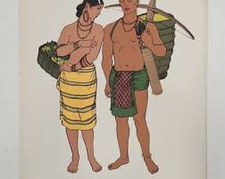 |
| 16 0 mayan/yucatec ideas to save today | mayan, aztec culture, mayan culture and more | 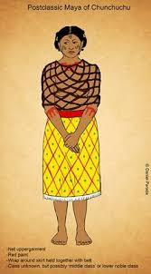 | |
| dmgestaocontabil.com.br | Vnt Giraffe Neck Women From Burma Ringling Bros Barnum And Bailey Advert Poster | 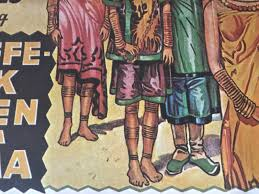 |
| Flickr | New Martyrs of the Catholic Church | Flickr | 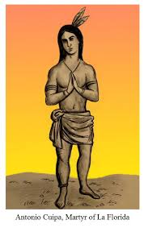 |
| Dalvanira Marrocos (dalvaniramarrocos) – Profile | Pinterest | 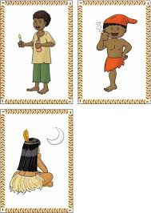 | |
| The World of Playing Cards | Casais Portugueses — The World of Playing Cards | 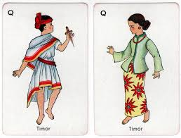 |
| Emaze | Proyecto de ciudadanía by pachecomaite525 on emaze | 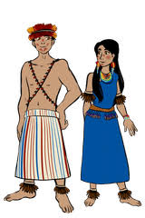 |
| Alchetron.com | Pa Togan Sangma - Alchetron, The Free Social Encyclopedia | 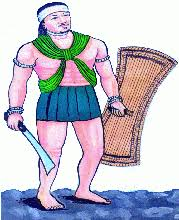 |
| Mbido Igbo | Cultural Igbo Family Painting for sale. Grab a copy. — Mbido Igbo | 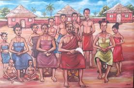 |
| eBay | 1959 INDIAN TRADING CARD 37 SEMINOLE MAN IN COSTUME PSA EX-MT 6 NS | eBay | 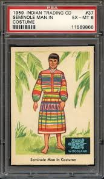 |
| TPT | How Maui Slowed the Sun {Storytelling Images} by Green Grubs | TPT | 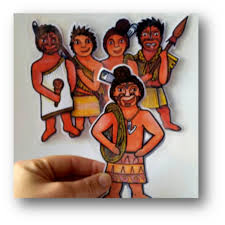 |
| eBay | ENCHANTING VILLAGE incomplete board game African culture 1989 witch-doctor | eBay | 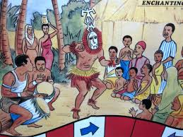 |
| Origins of Jayavarman and Southeast Asian Cultural Heritage | 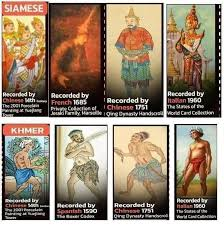 | |
| Pixton | A new way to write about “Island Of The Blue Dolphins” | 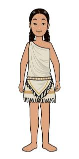 |
| nonsportrealm.com | The Hobbit: The Desolation of Smaug Autograph Card JC - John Callen as Oin the Dwarf (Cryptozoic) | 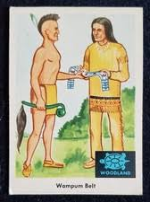 |
| Igo Com - Igo Com added a new photo. | 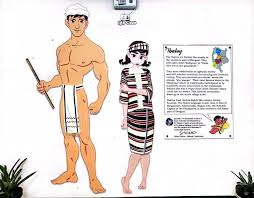 | |
| Educaplay | Slideshow: LITERATURA PRECOLOMBINA (lengua) | 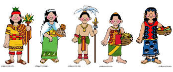 |
| ANCIENT Khom – Mon Civilizations 🥰 FUNAN was the first Khom – Mon Civilizations that flourished in mainland Southeast Asia from the 1st - 7th century. Archeological evidence and inscriptions found in | 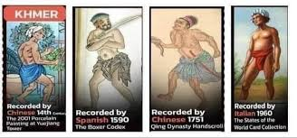 | |
| YouTube | 刘凯恩- YouTube | 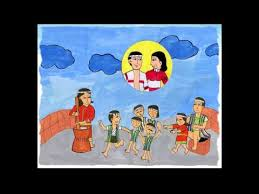 |
| A Whimsical cartoon illustration of A boy and a girl of the Dayak tribe, stand proudly in their traditional attire against a backdrop of lush green hills and stilt houses.He wears a | 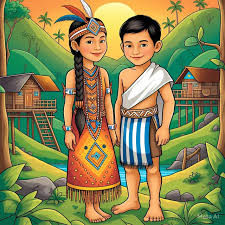 | |
| YouTube | CULTURA SHUAR - YouTube | 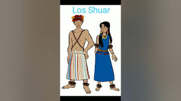 |
| Emaze | regiones de colombia by sarisbg=D on emaze | 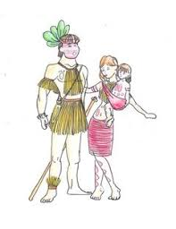 |
| X | HALYNA TRICOLOR 🧵 ¿De niño o niña leiste la revista TRICOLOR? Nada más venezolano que esta revista infantil. Pero, ¿sabías que una artista ucraniana llamada Halyna Mazepa fue una importante ilustradora de | 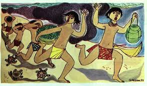 |
| Etsy | Ammon Felt Figures for Flannel Board Book OF Mormon Stories Come Follow Me Family Home Evening LDS Primary - Etsy | 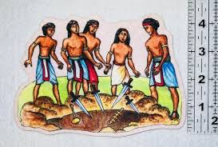 |
| Raket.PH | QUARTER 4 - MUSIC and ARTS 7 (Lesson 2/week3) with Jive in Lesson Exemplar (Lesson Plan) by teacher_athena - Raket.PH | 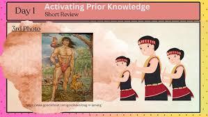 |
| Monde légendaire | Monde légendaire - The Legend of the Origin of Hammond Rock | 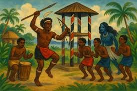 |
| Specs Fine Books | 1920 MYANMAR - BURMESE MISSIONARY. Original Original Gouache Illustrat – Specs Fine Books | |
| Learn JKBOSE | Clothing and Culture Class 5 EVS Summary Notes - Learn JKBOSE | |
| ArtStation | ArtStation - Ancient Civilization Costumes concept - BLUMI | |
| S3WaaS | Kendriya Vidyalaya Porbandar -: Report Of ART & CRAFT CLASS – VI TO X | |
| Andrea Estefania Noboa Ramos (andytef) - Profile | Pinterest | ||
| Etsy | Vintage Forties Indian Paper Toy Book - Etsy | |
| ANTHILL | We're constantly finding ways to make use of our scraps, even the tiniest bit. Start them young with this collection of indigenous paper... | Instagram | ||
| IndiaNetzone | Pangi Dance | |
| Stamp Community Forum | Let's Dance - Page 16 - Stamp Community Forum | |
| Cristal Brillante (malejandraoroz) – Profile | Pinterest | ||
| Behance | Natia Warda - Freelance Artist in Bandung, Indonesia :: Behance |
_issued_by_Kinney_Tobacco_Company_to_promote_Sweet_Caporal_Cigarettes_MET_DPB874379.jpg){kind=link}